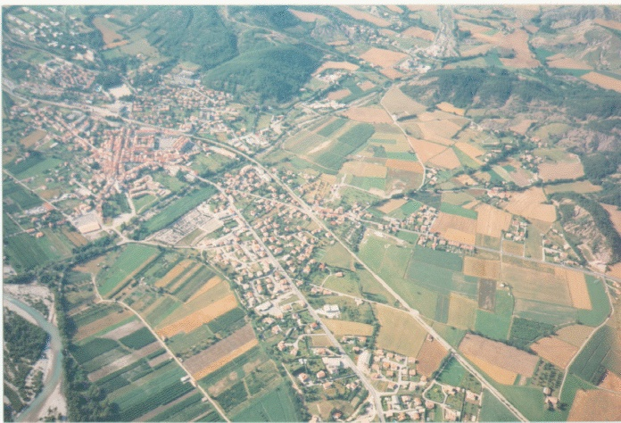

| Question | Code | Result | Output | Plagiarism |
question_1
May-18-2020
06:44:56 | |  | | | CUI | similarity | | 20101058 | 0.78125 | | 452782 | 0.828125 | | 20101060 | 0.0 | | 20101059 | 0.828125 | | question_2
May-18-2020
06:42:31 | |  | ('image opened, size:', (663, 412, 3))
('c:', 10)
('d:', 255)
0
245
Traceback (most recent call last):
File "question_2.py", line 46, in
new_img = contrast_stretching(img, a, b, c, d)
File "question_2.py", line 37, in contrast_stretching
if x < 0:
ValueError: The truth value of an array with more than one element is ambiguous. Use a.any() or a.all() | | CUI | similarity | | 20101059 | 0.8671875 | | 20101060 | 0.0 | | 452782 | 0.8671875 | | 20101058 | 0.8046875 | |